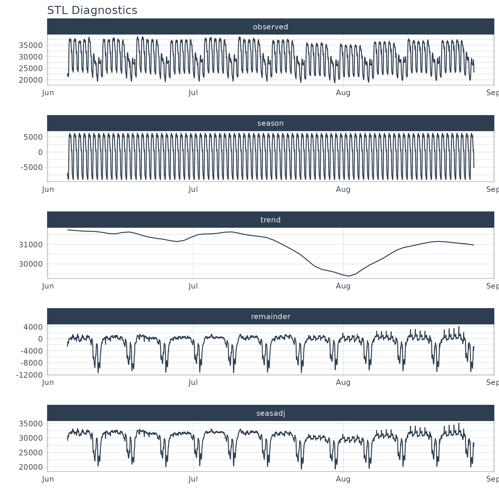

vignettes/TK06_Automatic_Frequency_And_Trend_Selection.Rmd
TK06_Automatic_Frequency_And_Trend_Selection.RmdA collection of tools for working with time series in R
Frequency and trend cycles are used in many time series applications including Seasonal ARIMA (SARIMA) forecasting and STL Decomposition. New in timetk 1.0.0 are Automatic Frequency and Trend Selection tools. These tools use only the the timestamp information to make logical guesses about the frequency and trend.
Daily Irregular Data
The daily stock prices of Facebook from 2013 to 2016 (courtesy of tidyquant). Note that trading days only occur on “business days” (non-weekends and non-business-holidays).
## # A tibble: 1,008 x 8
## symbol date open high low close volume adjusted
## <chr> <date> <dbl> <dbl> <dbl> <dbl> <dbl> <dbl>
## 1 FB 2013-01-02 27.4 28.2 27.4 28 69846400 28
## 2 FB 2013-01-03 27.9 28.5 27.6 27.8 63140600 27.8
## 3 FB 2013-01-04 28.0 28.9 27.8 28.8 72715400 28.8
## 4 FB 2013-01-07 28.7 29.8 28.6 29.4 83781800 29.4
## 5 FB 2013-01-08 29.5 29.6 28.9 29.1 45871300 29.1
## 6 FB 2013-01-09 29.7 30.6 29.5 30.6 104787700 30.6
## 7 FB 2013-01-10 30.6 31.5 30.3 31.3 95316400 31.3
## 8 FB 2013-01-11 31.3 32.0 31.1 31.7 89598000 31.7
## 9 FB 2013-01-14 32.1 32.2 30.6 31.0 98892800 31.0
## 10 FB 2013-01-15 30.6 31.7 29.9 30.1 173242600 30.1
## # … with 998 more rowsSub-Daily Data
Taylor’s Energy Demand data at a 30-minute timestamp interval.
taylor_30_min## # A tibble: 4,032 x 2
## date value
## <dttm> <dbl>
## 1 2000-06-05 00:00:00 22262
## 2 2000-06-05 00:30:00 21756
## 3 2000-06-05 01:00:00 22247
## 4 2000-06-05 01:30:00 22759
## 5 2000-06-05 02:00:00 22549
## 6 2000-06-05 02:30:00 22313
## 7 2000-06-05 03:00:00 22128
## 8 2000-06-05 03:30:00 21860
## 9 2000-06-05 04:00:00 21751
## 10 2000-06-05 04:30:00 21336
## # … with 4,022 more rowsAn example of where automatic frequency detection occurs is in the plot_stl_diagnostics() function.
taylor_30_min %>%
plot_stl_diagnostics(date, value,
.frequency = "auto", .trend = "auto",
.interactive = FALSE)## frequency = 48 observations per 1 day## trend = 672 observations per 14 days
The period argument has three basic options for returning a frequency. Options include:
A frequency is loosely defined as the number of observations that comprise a cycle in a data set.
Using tk_get_frequency(), we can pick a number of observations that will roughly define a frequency for the series.
Daily Irregular Data
Because FB_tbl is irregular (weekends and holidays are not present), the frequency selected is weekly but each week is only 5-days typically. So 5 is selected.
FB_tbl %>% tk_index() %>% tk_get_frequency(period = "auto")## frequency = 5 observations per 1 week## [1] 5Sub-Daily Data
This works as well for a sub-daily time series. Here we’ll use taylor_30_min for a 30-minute timestamp series. The frequency selected is 48 because there are 48 timestamps (observations) in 1 day for the 30-minute cycle.
taylor_30_min %>% tk_index() %>% tk_get_frequency("1 day")## frequency = 48 observations per 1 day## [1] 48The trend is loosely defined as time span that can be aggregated across to visualize the central tendency of the data.
Using tk_get_trend(), we can pick a number of observations that will help describe a trend for the data.
Daily Irregular Data
Because FB_tbl is irregular (weekends and holidays are not present), the trend selected is 3 months but each week is only 5-days typically. So 64 observations is selected.
FB_tbl %>% tk_index() %>% tk_get_trend(period = "auto")## trend = 64 observations per 3 months## [1] 64Sub-Daily Data
A 14-day (2 week) interval is selected for the “30-minute” interval data.
taylor_30_min %>% tk_index() %>% tk_get_trend("auto")## trend = 672 observations per 14 days## [1] 672A Time-Scale Template is used to get and set the time scale template, which is used by tk_get_frequency() and tk_get_trend() when period = "auto".
The predefined template is stored in a function tk_time_scale_template(). This is the default used by timetk.
Accessing the Default Template
You can access the current template with get_tk_time_scale_template().
## # A tibble: 8 x 3
## time_scale frequency trend
## <chr> <chr> <chr>
## 1 second 1 hour 12 hours
## 2 minute 1 day 14 days
## 3 hour 1 day 1 month
## 4 day 1 week 3 months
## 5 week 1 quarter 1 year
## 6 month 1 year 5 years
## 7 quarter 1 year 10 years
## 8 year 5 years 30 yearsChanging the Default Template
You can modify the current template with set_tk_time_scale_template().
My Talk on High-Performance Time Series Forecasting
Time series is changing. Businesses now need 10,000+ time series forecasts every day.
High-Performance Forecasting Systems will save companies MILLIONS of dollars. Imagine what will happen to your career if you can provide your organization a “High-Performance Time Series Forecasting System” (HPTSF System).
I teach how to build a HPTFS System in my High-Performance Time Series Forecasting Course. If interested in learning Scalable High-Performance Forecasting Strategies then take my course. You will learn:
Modeltime - 30+ Models (Prophet, ARIMA, XGBoost, Random Forest, & many more)GluonTS (Competition Winners)